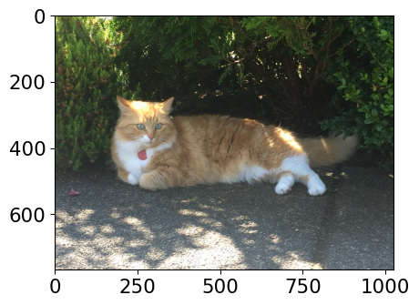
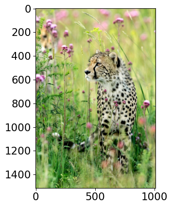
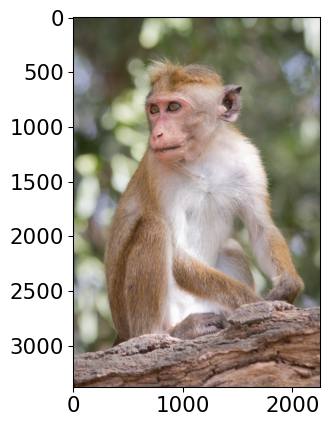
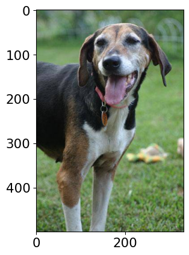

Class Probability score
tiger cat 0.353
tabby, tabby cat 0.207
lynx, catamount 0.050
Pembroke, Pembroke Welsh corgi 0.046
--------------------------------------------------------------
Class Probability score
cheetah, chetah, Acinonyx jubatus 0.983
leopard, Panthera pardus 0.012
jaguar, panther, Panthera onca, Felis onca 0.004
snow leopard, ounce, Panthera uncia 0.001
--------------------------------------------------------------
Class Probability score
macaque 0.714
patas, hussar monkey, Erythrocebus patas 0.122
proboscis monkey, Nasalis larvatus 0.098
guenon, guenon monkey 0.017
--------------------------------------------------------------
Class Probability score
Walker hound, Walker foxhound 0.580
English foxhound 0.091
EntleBucher 0.080
beagle 0.065
--------------------------------------------------------------